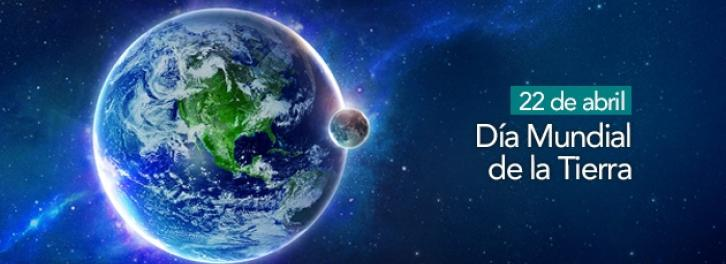

Dia internacional de la madre tierra 22 de abril


- 


Realizado por:
Carlos Alfredo Romero Gonzalez
4"F"
Especialidad:
programacion
Submodulo
Desarrolla Aplicaciones Moviles
Docente
Lic.Jose Antonio Gomez Hernandez
4"F"
programacion
Desarrolla Aplicaciones Moviles
Lic.Jose Antonio Gomez Hernandez
n programa de salud es un conjunto de acciones implementadas por un gobierno con el objetivo de mejorar las condiciones sanitarias de la población. De esta forma, las autoridades promueven campañas de prevención y garantizan el acceso democrático y masivo a los centros de atención.Por lo general, un programa de salud consta de diversas partes. En principio, se plantea una introducción, con los antecedentes y la misión que cumplirá el programa. Después se realiza un diagnóstico de la situación actual, que puede incluir una síntesis de evaluación de planes similares que se hayan desarrollado con anterioridad.Entre los objetivos fundamentales del lanzamiento de un programa de salud se encuentran la prevención de todo tipo de enfermedades y el eficaz desempeño de los profesionales en las respectivas áreas de salud.